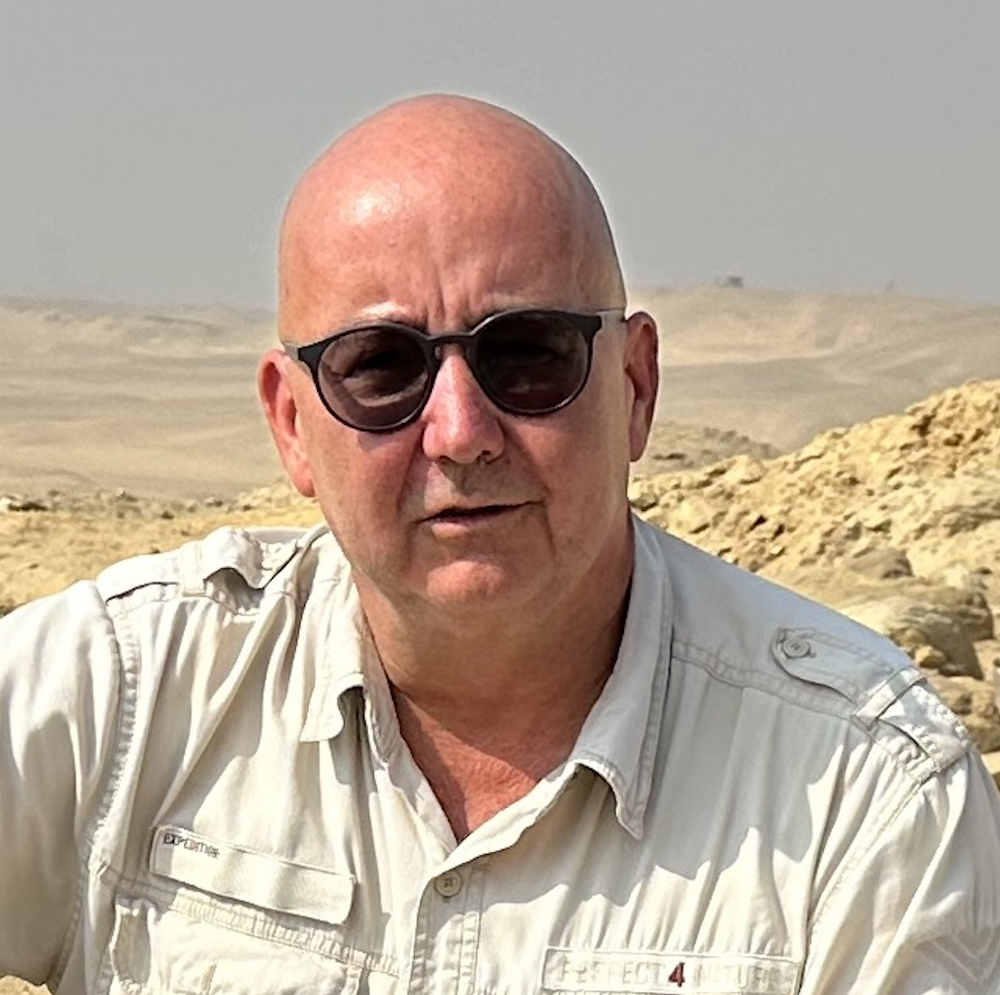

講師 / SPEAKER
ミロスラフ・バールタ
Miroslav Bárta
チェコ共和国国会議員、プラハ・カレル大学 教授・元副学長
Professor, Charles University in Prague
講演詳細
- 📅 日付: 2025年5月9日（金）
- 🕒 時間: 午後3時15分から4時30分まで
- 📍 会場: 筑波大学大学会館国際会議室およびオンライン
- 🏛️ 主催: 筑波大学人文社会系
- 📖 共催: 筑波大学西アジア文明研究センター、東京文化財研究所
- 💪 実行係: 河合望（筑波大学人文社会系教授） & 宮川創（筑波大学人文社会系准教授）
- どなたでも参加できます。
講演について
この講演では、考古学がいかに「戦略的科学」として機能するかについて探求します。古代エジプトの古王国時代の興亡を事例として取り上げ、その歴史的パターンから現代社会に応用できる知見を導き出します。
古代文明の崩壊過程を理解することは、現代の複雑な社会問題への洞察を深めるための重要な手がかりとなります。バールタ教授はアブシールのピラミッド地帯およびサッカラ北部での発掘調査で明らかになった新たな発見を紹介しながら、文明の周期的なパターンについて論じます。
特に注目するのは、複雑な社会構造、資源の配分、エリート層の役割、そして社会変革の力学です。これらの要素がどのように古代エジプト社会の盛衰に影響したかを分析し、現代のグローバル社会が直面する課題への応用を考察します。
研究分野
プロジェクト
アブシール発掘プロジェクト: エジプトのピラミッド地帯であるアブシールでの発掘調査を指揮し、古王国時代の社会構造と変遷について新たな発見をもたらしています。
サッカラ北部プロジェクト: サッカラ北部での発掘調査を通じて、古代エジプトのエリート墓地の構造と社会階層について重要な知見を収集しています。
衛星ピラミッド調査: 最新のリモートセンシング技術を用いて、エジプトのピラミッド地帯を記録・分析する先駆的なプロジェクトを展開しています。
略歴
ミロスラフ・バールタ教授は、アブシールのピラミッド地帯とサッカラ北部での発掘調査の指揮を執るエジプト考古学者です。古王国時代の考古学と文明の比較研究を専門としており、エジプトのピラミッド地帯の衛星記録技術を先駆的に開発しました。
バールタ教授は、プラハのカレル大学で教鞭を執り、古代文明の興亡パターンを現代社会の課題に応用する学際的研究を行っています。彼の研究アプローチは考古学、歴史学、社会学、経済学などの分野を横断するものであり、複雑系の変化と適応に関する理論的枠組みを提供しています。
アメリカ芸術科学アカデミーの会員である彼は、多数の学術書を執筆し、エジプト学と考古学の分野に大きく貢献しています。特に「文明の崩壊と再生」に関する一連の研究は、学際的分野で高く評価されています。
Lecture Details
- 📅 Date: May 9, 2025 (Friday)
- 🕒 Time: 15:15-16:30 (Japan Time)
- 📍 Venue: University of Tsukuba, Tsukuba Campus, University Hall, International Conference Room and Online
- 🏛️ Host: University of Tsukuba, Faculty of Humanities and Social Sciences
- 📕 Co-host: Research Center for West Asian Civilization; Tokyo National Research Institute for Cultural Properties, the University of Tsukuba
- 💪 Organizers:. Nozomu Kawai (Professor at IHSS & RCWAC, UTsukuba) & So Miyagawa (Associate Professor at IHSS & RCWAC, UTsukuba)
About the Lecture
This lecture explores how archaeology functions as a "strategic science," using the rise and fall of ancient Egypt's Old Kingdom as a case study to derive insights applicable to contemporary society.
Understanding the collapse processes of ancient civilizations provides crucial clues for gaining insight into complex social problems of the modern era. Professor Bárta will discuss the cyclical patterns of civilizations while presenting new discoveries from his excavations in the pyramid field of Abusir and North Saqqara.
Particular attention will be given to complex social structures, resource allocation, the role of elites, and the dynamics of social transformation. The lecture will analyze how these elements influenced the rise and fall of ancient Egyptian society and consider applications to challenges facing today's global society.
Research Areas
Projects
Abusir Excavation Project: Directing excavations in the pyramid field of Abusir, Egypt, bringing new discoveries about social structures and transitions during the Old Kingdom period.
North Saqqara Project: Conducting excavations in North Saqqara to gather important insights about the structure of elite cemeteries and social hierarchy in ancient Egypt.
Satellite Pyramid Survey: Developing pioneering projects using advanced remote sensing technologies to document and analyze Egypt's pyramid fields.
Biography
Professor Miroslav Bárta is the director of excavations on the pyramid field of Abusir and in North Saqqara. He specializes in Old Kingdom archaeology and the comparative study of civilizations. Prof. Bárta pioneered, among many others, satellite documentation of the pyramid fields in Egypt.
At Charles University in Prague, Professor Bárta conducts interdisciplinary research applying patterns from ancient civilizations' rise and fall to contemporary societal challenges. His research approach crosses disciplines including archaeology, history, sociology, and economics, providing theoretical frameworks for understanding complex system changes and adaptations.
A member of the American Academy of Arts and Sciences, he has authored numerous scholarly books, making significant contributions to Egyptology and archaeology. His series of studies on "Collapse and Regeneration of Civilizations" has been highly regarded in interdisciplinary fields.